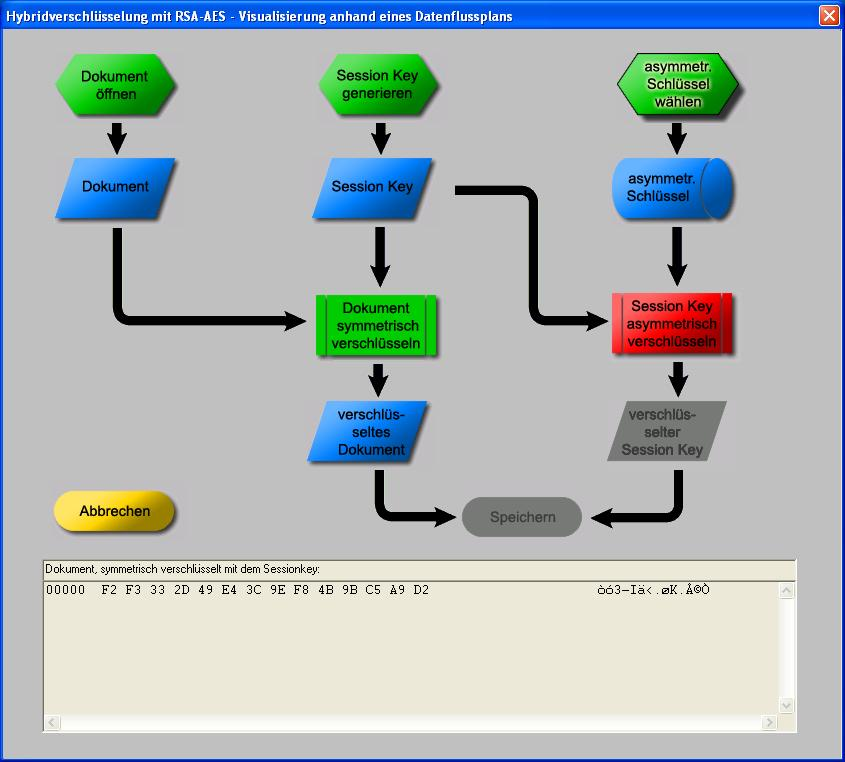

Dieser Dialog bietet die Möglichkeit, jeden Schritt der Verschlüsselung mit dem Hybridverfahren selbst einzuleiten. Somit können Sie die anscheinend komplexen Vorgänge der Hybridverschlüsselung leicht nachvollziehen.
Das Hybridverfahren ist das am weitesten verbreitete Verfahren, Daten verschlüsselt zu übertragen. Weitere Informationen zur Hybridverschlüsselung finden sie im Skript.

Wenn Sie noch keinen asymmetrischen Schlüssel angelegt haben, müssen Sie das vor dem Aufruf des Dialogs zur Hybridverschlüsselung tun:
Im Menü von CrypTool unter Digitale Signaturen/PKI \ PKI \ Schlüssel erzeugen finden Sie entsprechende Werkzeuge. Damit können Sie sich Ihr RSA-Schlüsselpaar erzeugen und in die interne Datenbank von CrypTool abspeichern.
Nachdem alle Schritte der Hybridverschlüsselung durchlaufen sind, kann man sich alle erzeugten Daten über den Button "Datenausgabe" in einem neuen Fenster anzeigen lassen.
Der Inhalt dieses Fensters dient auch als Grundlage für die Hybridentschlüsselung, die den gesamten Verschlüsselungsvorgang rückgängig machen kann.
Die Bedienung des Dialogs ist darauf ausgerichtet, dass Sie in spielerischer Weise mit der Hybridverschlüsselung experimentieren können.
Dazu wurden die einzelnen Schritte der Verschlüsselung durch Schaltelemente in Form von Symbolen eines Datenflussplans dargestellt.
Folgende Symbole wurden verwendet:
Symbol für vorbereitende Schritte (z.B. Datei wählen)
Symbol für Prozessdaten (z.B. Sessionkey anzeigen)
Symbol für gespeicherte Daten (z.B. asymmetrischen Schlüssel anzeigen)
Symbol für einen benannten Standard-Prozess (z.B. Text symmetrisch verschlüsseln)
Die Farben der Symbole geben Aufschluss über den Zustand des jeweiligen Arbeitsschrittes bzw. über das jeweilige Datenelement:
Rot
Zu erledigender Arbeitsschritt (Vorbereitung / Eingabe / Prozess)
Grün
Bereits erledigter Arbeitsschritt(Vorbereitung / Eingabe / Prozess)
Blau
Vorhandene Daten (Anzeige und Weiterverarbeitung möglich)
Grau
Inaktiv (fehlende Daten / noch nicht ausführbarer Prozess)
Die Abhängigkeiten der Ausführungsschritte werden durch Pfeile zwischen den Symbolen angezeigt. Aktive Buttons (rot/grün/blau) können in beliebiger und wiederholter Reihenfolge angeklickt werden. Inaktive Buttons (grau) reagieren nicht auf Anklicken. Prozesse können erst ausgeführt werden, wenn alle dafür notwendigen Vorbedingungen erfüllt sind.
Das Diagramm ist in vier Reihen untergliedert:
Die erste Reihe beinhaltet die Arbeitsschritte, die vor der eigentlichen Durchführung der Verschlüsselung ausgeführt werden müssen (z.B. Schlüssel erzeugen, Daten wählen, die verschlüsselt werden sollen).
In der zweiten Reihe befinden sich die Steuerelemente, die für die Anzeige der in Schritt erzeugten / geladenen Daten zuständig sind.
In der dritten Reihe werden die Prozesse der Hybridverschlüsselung durchgeführt.
In der vierten Reihe können Sie sich das verschlüsselte Dokument anzeigen lassen.